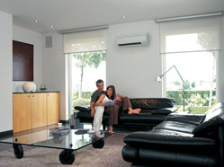
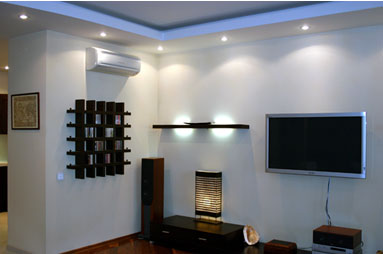
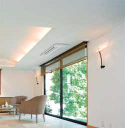

Кондиционер в квартиру
|
Установка кондиционера - это технически сложный процесс монтажа климатической техники. Правильный выбор размещения внутренних блоков сплит системы или мульти сплит системы, последующий этап пуско-наладочных работ, а также проверки работоспособности оборудования – это залог комфорта в помещении и долговечности приобретённого оборудования. Основное на что нужно обратить внимание при выборе кондиционера это на его производительность (мощность по холоду и теплу). Именно характеристика мощности кондиционера определяет, насколько быстро и эффективно кондиционер создаст, а так же будет поддерживать микроклимат в помещении. Подбор кондиционера по мощности зависит от многих причин, например: площадь помещения, размеры оконных проемов, наличие балкона, наличие солнца, материал, из которого изготовлены стены дома и их толщина. |  |
|  | Сплит системы или мульти сплит системы – это наиболее популярные системы кондиционирования во всем мире. Данные сплит системы представляют собой два блока, соединенные между собой фреонотрассой, состоящей из медных трубопроводов в изоляции, межблочного кабеля управления блоками и дренажного шланга с антибактериальной обработкой. Наиболее шумные элементы кондиционера, такие как компрессор и вентилятор, размещены во внешнем блоке, который как правило устанавливается на фасадной части здания. Внутри помещения устанавливается внутренний блок кондиционера. Внутренний блок кондиционера для покупателя должен обладать качествами современного дизайна, бесшумностью своей работы, контроль заданной температуры, наличием электростатических, антибактериальных фильтров. Настенные кондиционеры - это наиболее популярные сплит системы среди потребителей. Они не занимает много места, компактны и удобны в эксплуатации. Современные кондиционеры снабжены рядом дополнительных функций, которые позволяют улучшить комфорт в помещении. Такие ведущие бренды как Daikin, General Fujitsu, Mitsubishi Heavy, Mitsubishi Electric, MDV постоянно работают в направлении усовершенствования качества дизайна, снижения шумовых характеристик, функций комфортности и очистки воздуха. |
| Напольные или консольные кондиционеры – это сплит системы способные обеспечить равномерное распределение температуры в помещении.Внутренний блок кондиционера размещается вертикально на стене. В режиме охлаждения поток воздуха от внутреннего блока кондиционера направляется вверх и, отражаясь от потолка, равномерно распределяется по помещению. В режиме обогрева поток воздуха направляется вниз, обеспечивая равномерное распределение воздушных масс воздуха по всему помещению. Консольные кондиционеры в отличие от напольных кондиционеров обеспечивают подачу воздуха в четырех направлениях. Это позволяет ещё более равномерно распределить поток воздуха по всему объему помещения. |
|  | Потолочные кондиционеры – это сплит-системы у которых внутренний блок крепится непосредственно к потолку. В данном случае поток охлажденного воздуха направляется горизонтально и на значительные расстояния. Потолочные кондиционеры обладают высокой холодопроизводительностью. Они обеспечивают равномерное распределение воздушного потока на большие и протяжённые площади, типа коридор, холл. |
| Кассетные кондиционеры. В квартирах, установка кондиционера кассетного типа, осуществляется при наличии высокого потолка и возможности его опускания. В зависимости от модели кондиционера для установки кассетного внутренного блока потребуется до 30 см запотолочного пространства. Внутренний блок кассетного кондиционера практически полностью скрыт, снаружи видна лишь декоративная решетка. Количество направлений воздушных потоков регулируется от двух до четырех, что обеспечивает равномерное распределение воздуха по всему объему помещения. Кассетный кондиционер является оптимальным вариантом для создания комфортных условий по распределению воздушных потоков даже для небольших комнат. |